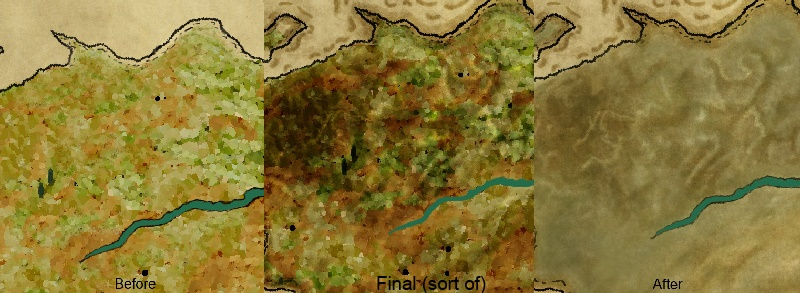

News, Updates, & Announcements
-
Summer Time and Java Runtime - Sep 25 Septembers been a busy month so far, editing 2,3 trailers, a failed greenlight campaign and art assets overhauls. It has been a very exciting experience to put something out there on the internet and recieve feedback. I didnt want to put it up on steam till i knew the game ran on all 3 platforms(Win,Mac,&Linux).
Read more
-
Long overdue delayed update - Aug 20 Wow i cannot believe its already half way through August, the time really flys when your in the thick of development. I have a alot to write about but ill try to keep it brief.
 Read more -
Quick update - April 21 this week i have added a new functional player unit into the game, the ranged Celtic archer. The ranged archer unit can attack farther than a melee unit can. However the archer unit has no armor, so their vulnerable to close melee attacks. Since archers have no armor they deal just bit more damage than the average melee units do. I will post an image below of the rough implementation.
Read more
-
The combat system - April 13 This week ive put some time into the combat system of Art of War. While your trying to conquer England or not, you will be engaged in combat. To capture the essance of Sun Tzu's document The Art of War(T.A.O.W.) and as a fan a of Japanese and Chinese board games like Go, ive influenced the game board to be a square grid based like Go (if you have not played Go i suggest you do!).
Read more -
WTF is art of war? - April 10 Art of War is a turn based strategy game i have been developing for the past couple months based on an over 2,000 year old ancient Chinese military document titled, The Art of War. Being facinated by history my whole life. I wanted to make a game that puts the player in a position of power during a specific time in history. With my recent big interest in english history, ive given control to the player over a small bronze age celtic tribe in England. Crucial economic and political decisions as well as scientific/techological advancement choices will be made that shape your rule, whether you focus more on military, economics, or agriculture.
Read more